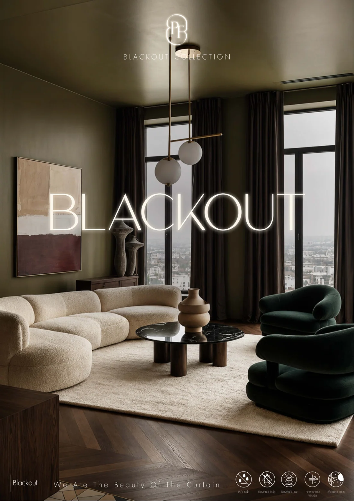

THE FABRIC COLLECTION VOL.01
Blackout Fabrics
เลือกชมเฉดสีและรายละเอียดผ้าม่านได้อย่างชัดเจน · พลิกหน้าราวกับหนังสือจริง
CATALOGUE 01 / 11
CATALOG VIEWER INTERACTIVE
แสดงสองหน้า
PROFACE STUDIO
THE BEAUTYOF THE CURTAIN.

‹ คลิกหรือปัดเพื่อพลิกหน้า ›
เลือกหน้าที่ต้องการ
อ่านรายละเอียดสินค้าได้ชัดขึ้นด้วยปุ่ม ซูมคมชัด ซึ่งเปิดไฟล์ PDF ต้นฉบับPROFACE STUDIO · DIGITAL CATALOGUE